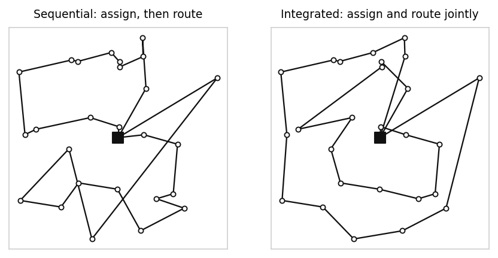

Retailers serving both stores and direct customers from one network must decide which facility fills which order and how vehicles travel. Solved separately, the two decisions fight each other.
An omnichannel distribution network serves two demand streams from shared assets. Store replenishment moves in large predictable volumes; direct-to-consumer orders arrive small, scattered and time-sensitive. Both draw on the same fleet, the same depots and the same inventory.
Classical practice decomposes this. An assignment step allocates each order to a facility, then a routing step builds vehicle tours for whatever it was given. Each step optimises well on its own terms. Together they can be poor, because the assignment step has no representation of what a route costs, and the routing step cannot revisit an allocation that made routing expensive.
The thesis asks what is lost by that decomposition, and whether an integrated formulation recovers enough to justify its cost.
Two forces make the question current. Omnichannel volumes have grown to the point where direct-to-consumer flows are no longer a rounding error on top of store replenishment, so the interaction between the two is material. And distribution networks are being asked to absorb disruption, from depot closures to vehicle unavailability, without collapsing service levels.
A network optimised only for cost under nominal conditions may have no slack at all. Measuring resilience requires re-solving under disruption rather than inspecting the nominal solution.
The formulation is a mixed-integer linear programme. Binary variables carry both the routing arcs and the order-to-facility assignment, so the solver trades one against the other inside a single feasible region. It extends the capacitated vehicle routing problem with channel-specific allocation constraints that distinguish store replenishment from direct orders.
The model is a two-stage stochastic mixed-integer programme that pre-commits backup fulfilment nodes across three channels, with routing, third-party logistics and unserved demand available as recourse once a disruption realises. Seven disruption scenarios are carried in the scenario set.
The formulation reaches 14,334 variables and is solved in Gurobi to a 1.9 percent optimality gap.

Two comparisons carry the result. Adding the backup fulfilment layer cut expected cost by 32.3 percent and reduced unserved demand from five units to two. Planning stochastically rather than deterministically cut expected cost by 61 percent against the deterministic plan evaluated on the same scenarios.
The second number is the more important one. It is the price of pretending the future is known: a plan that looks cheap on the nominal forecast is far more expensive once disruption is priced in.
The contribution is a formulation that treats allocation and routing as one decision, and an evaluation protocol that reports both nominal cost advantage and behaviour under stress. The practical reading for a distribution planner is where integration pays and where a decomposed heuristic is good enough.
Solved in Gurobi via Pyomo. Supervised by Prof. Jakob Puchinger at CentraleSupélec.